GitHub Essentials
Format
This is designed as an in-person, facilitated workshop with pairs of learners working together, or individually. It could also be done online.
Target Audience
People new to Git/GitHub looking for some practice with the workflow.
Materials
- An Internet connection to access the GitHub site
- Computers to work on, ideally with GitHub Desktop installed
- An Internet connection to access the GitHub site
Introduction
GitHub is a web-based interface for version control, a way of keeping track of changes made to a collection of working documents. GitHub provides a structure and space for communicating about collaborative work on open projects. With bit of set-up, and a good workflow, you can make your project accessible and transparent, and create a respectful and productive working environment for your collaborators.
This exercise walks you through a workflow for using Git/Github through the GitHub web interface and through the GitHub Desktop App. You will learn through examples about how to make commits, create issues, create branches and merge them, and revert commits. You will also begin writing things in Markdown - a simple "markup" language used for blogging, documentation, and even writing papers!
GitHub Online: Steps to Complete
-
Sign up and install
Start by signing up with Github Online and installing the Github Desktop
Sign up 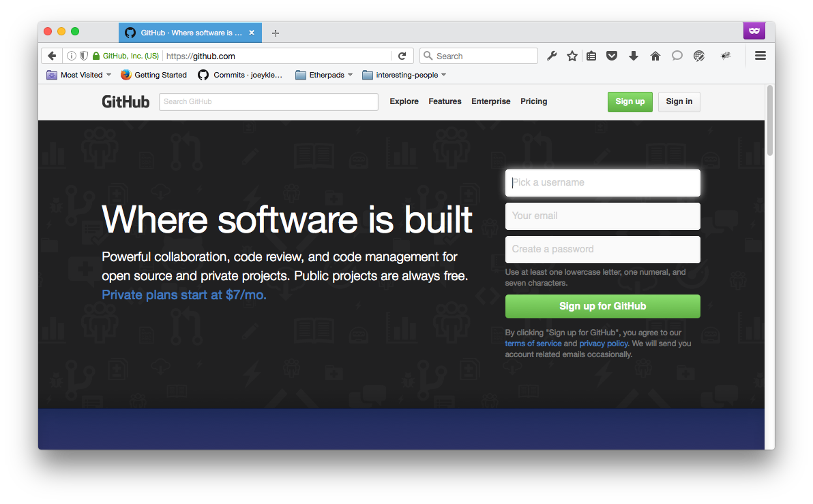 Install 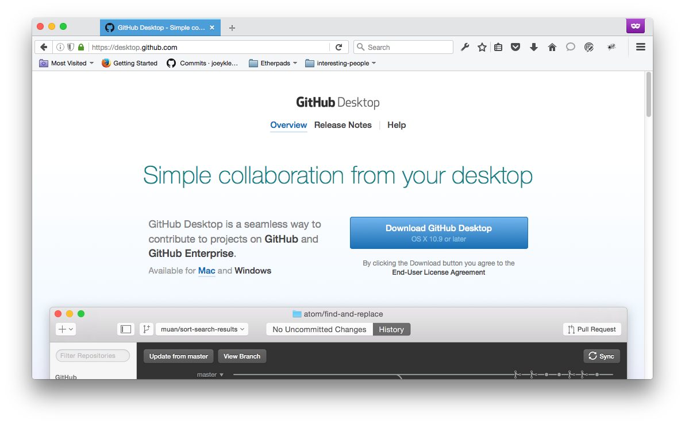 -
Create a Repo
Every project starts by creating a "new repository"
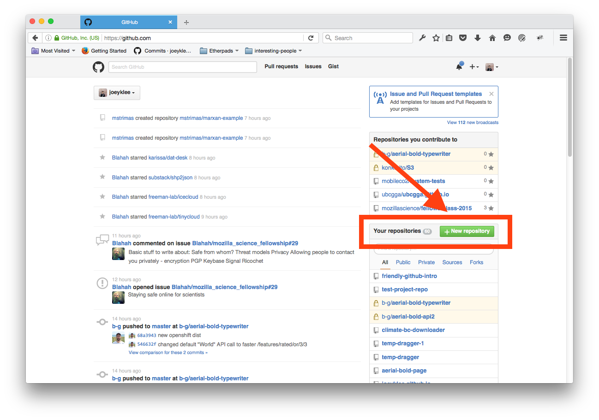 -
Create a title & description
Create a project title and description. Good practice is to either use dashes ("-") or underscores ("_") between words in your title (e.g. my-first-repo or my_first_repo)
Write a short description of your repository.
Initialize your repo with a README - the title and description you write above will be shown by default.
If you are sure what kind of license you want on your repo, select one here, or put your own license in later.
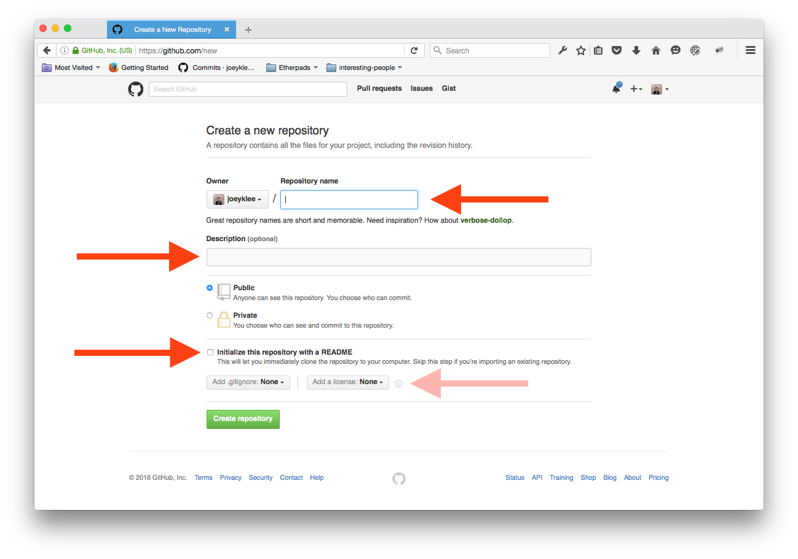Your first repo!
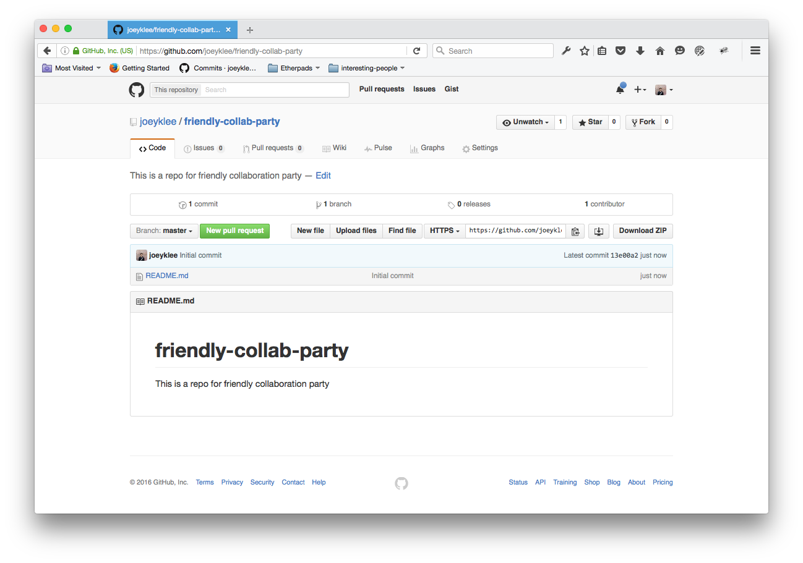 -
Your first commit
Let's start by adding some content to your README. To make your first commit, you are going to follow a few steps:
First: Click on the README.md & then edit button
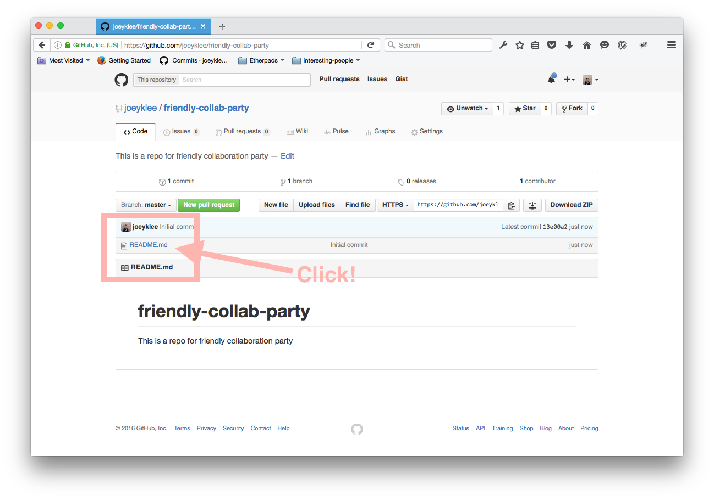 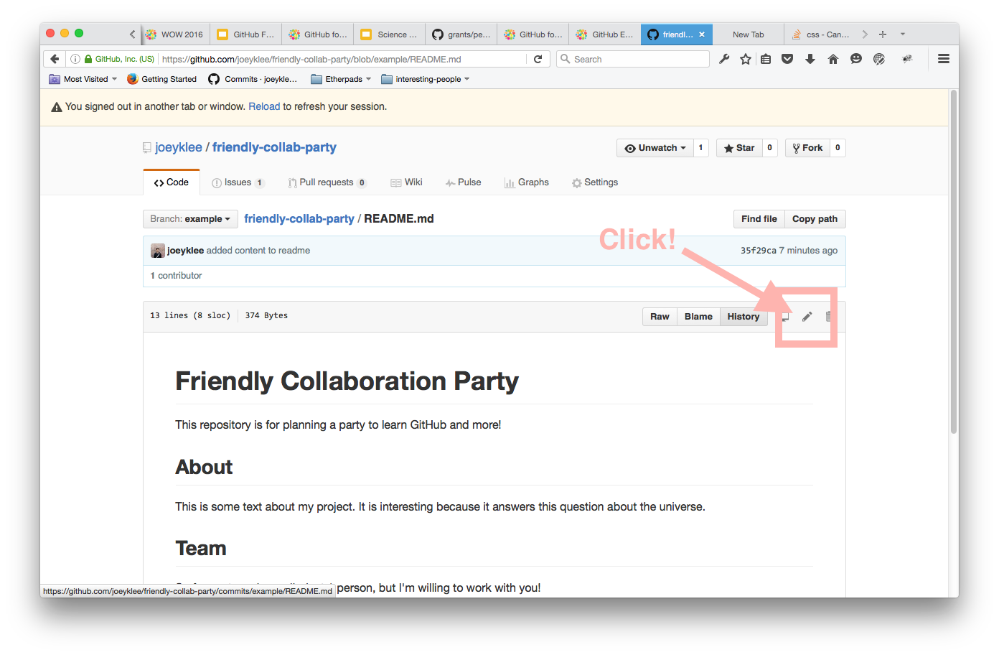Second: Using the Markdown syntax put in the following sections and a short description for each
# Friendly Collaboration Party This repository is for planning a party to learn GitHub and more! ## About This is some text about my project. It is interesting because it answers this question about the universe. ## Team So far my team is small - just 1 person, but I'm willing to work with you! ## Setup & Requirements This project requires a computer and internet.Third: Add a commit message - Your commit message should point to the changes that you've made (e.g. added content to readme) and press the commit button!
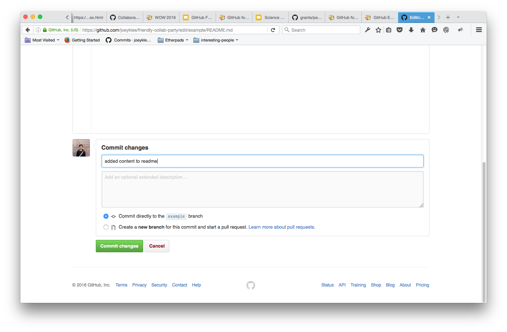Hooray! 👏🏽✨🎉 Your first commit!
-
Create an Issue
Go to the Issues Tab and create and issue about a task you want to complete (e.g. need more detailed README or create CODEOFCONDUCT.md).
Assign the task to yourself where it says "Assignee" and "Assign yourself"
Label the task in a category you thin is appropriate - or create a new label!

-
Create a branch
Create a branch to add some features to your project without affecting or possibly breaking the current state of your project.
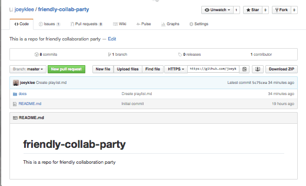While in your new branch, "create a new file" or "edit" and existing file - try to address the issue you created above.
-
Merge the changes from the branch
Once you've made some changes to an existing file or added a new file, try to merge that file back in to your "master" branch.
Make sure your commit message on the merge is meaningful and points to the changes you made.
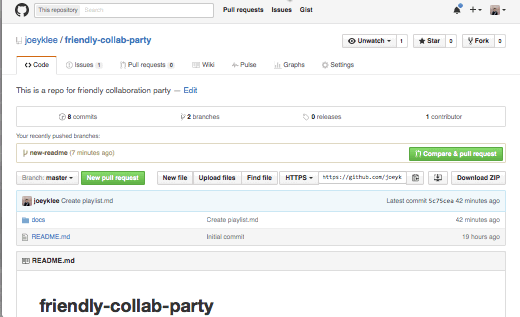 -
Close the Issue
If you believe you've done a good job addressing the issue you opened up earlier, close the issue!
GitHub Desktop: Steps to Complete
In this exercise, you will add an existing project on your local computer to GitHub. If you do not have an existing project or want to use an example one, feel free to use any of these three example projects:
- Chocolate Chip Cookie Recipe: markdown
- Interactive R map: R code
- Web Portfolio Template: html/css
- Writing Sample - UBC Dissertation: Microsoft Word
-
Open Github Desktop
Start by opening up GitHub Desktop.
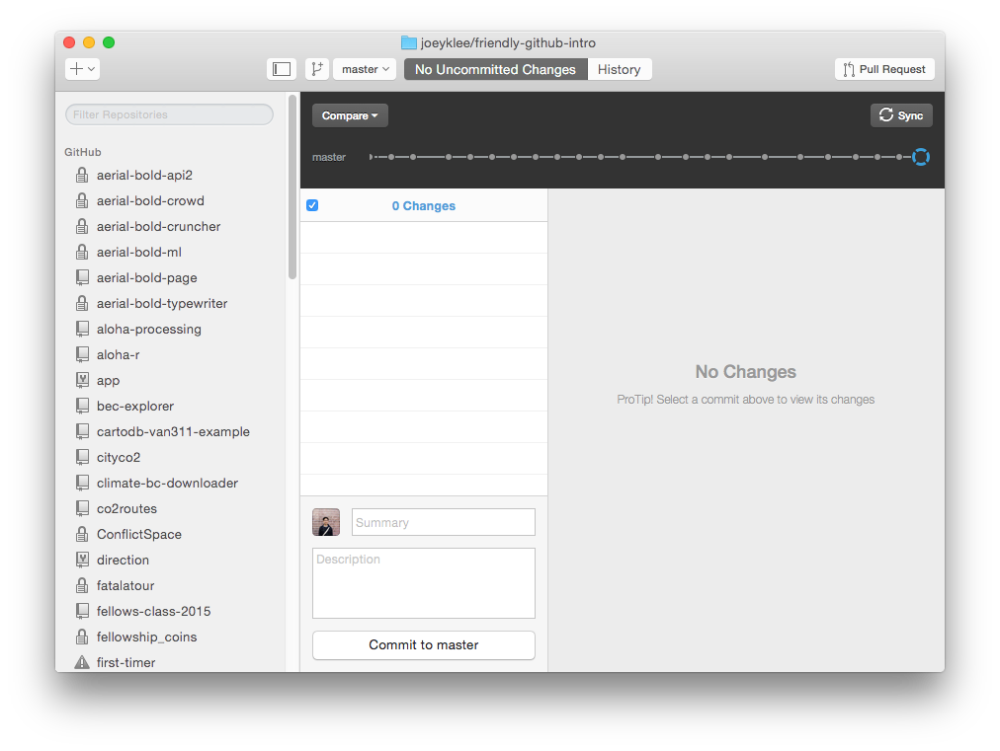 -
Select a project
If you have a project you want to put on GitHub, that's great! If not, you are welcome to use some projects we've prepared for you (see: Chocolate Chip Cookie Recipe, Interactive R map, Web Portfolio Template, Writing Sample - UBC Dissertation.)
-
Add your project to GitHub
First: Click the "+" button
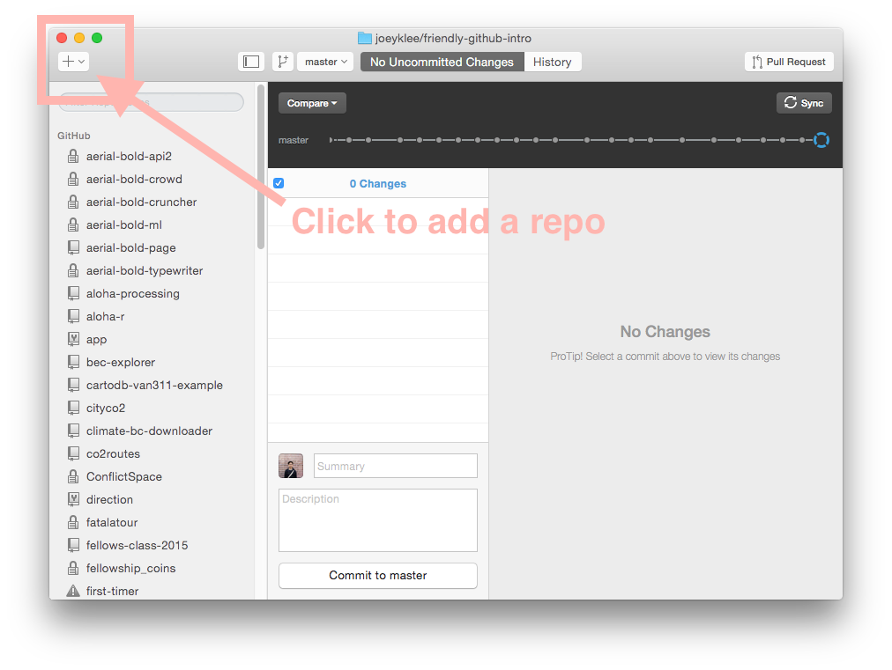Second: Click the "add" button
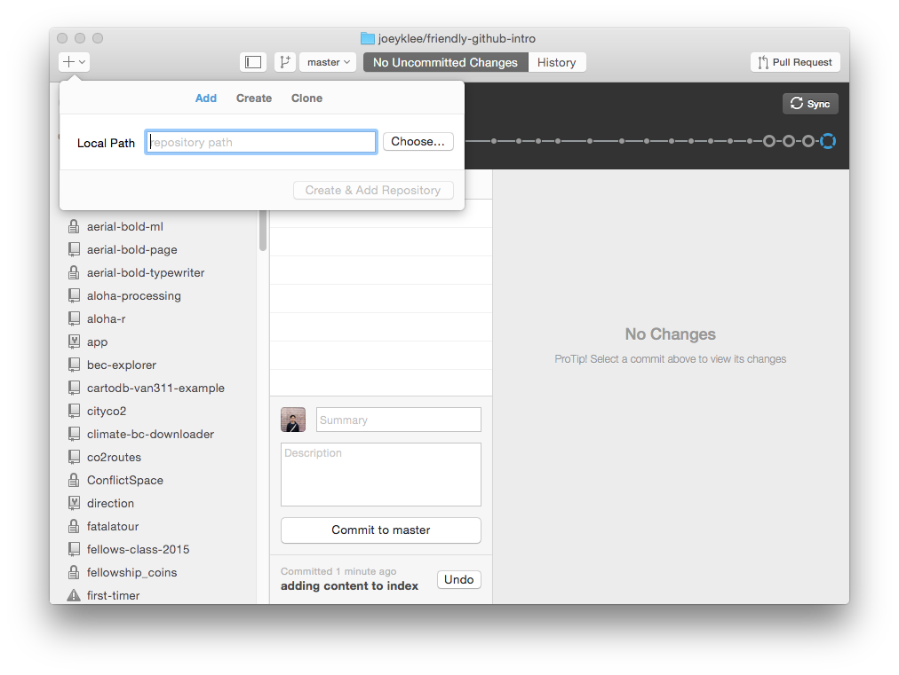Third: Navigate to where your project lives
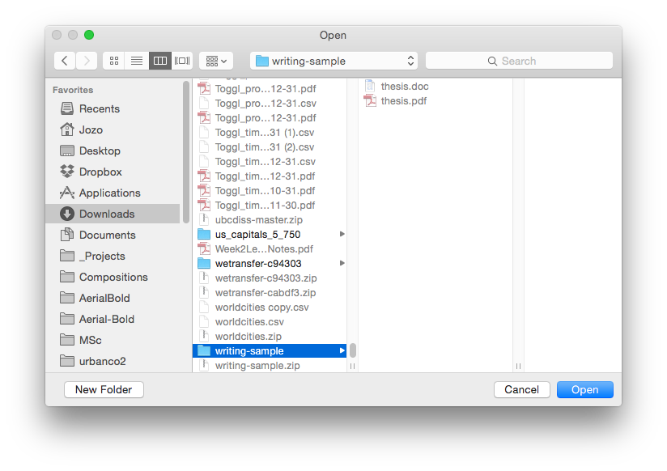Fourth: Create and add repository
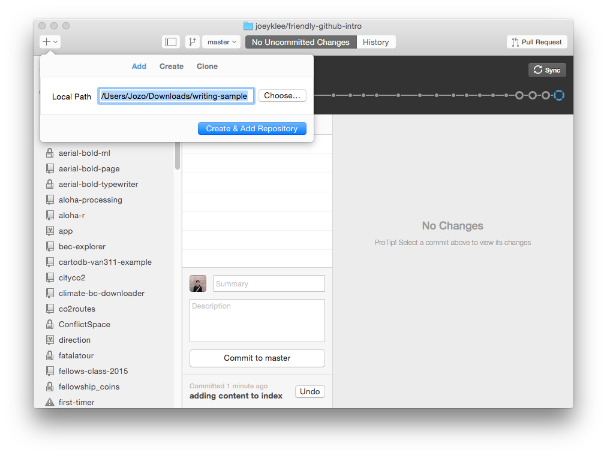Fifth: Commit and Publish Now that you've created a git repository from your folder, you can now commit each of your files.
You can either commit all of the files at once and in the commit message say:
Initial Commithere is a video showing this process
-
Create a branch, make changes, merge them in
In this step, make a branch to work on some new content for your newly added repo, make a commit, and merge those changes from your new branch into your master branch.
For the example of the writing sample, a new branch ("new-title")is created to add a new title to the thesis. A new title is added and the file is committed to the new branch called "new-title".
After making the changes, we decide that the master branch needs to have this same title, SO, we:
- - toggle back to the master branch
- - click the "compare" button and select the "new-title" branch.
- - and "update from 'new-title' " which merges those changes in.
Last, we check the file to see if the changes have been merged from the "new-title" branch to the "master" branch.
A Note on switching back and forth between branches
Notice when we switch back and forth between branches how the title is different. While it appears that "thesis.doc" is the same file, Git is running in the background to make sure that the changes you applied are properly applied based on which branch you're in.
-
Revert a commit
The last piece of functionality we will try is to revert a commit. In a situation in which you are not happy with a commit, you can "revert" the commit by:
First: click on the commit you want to revert
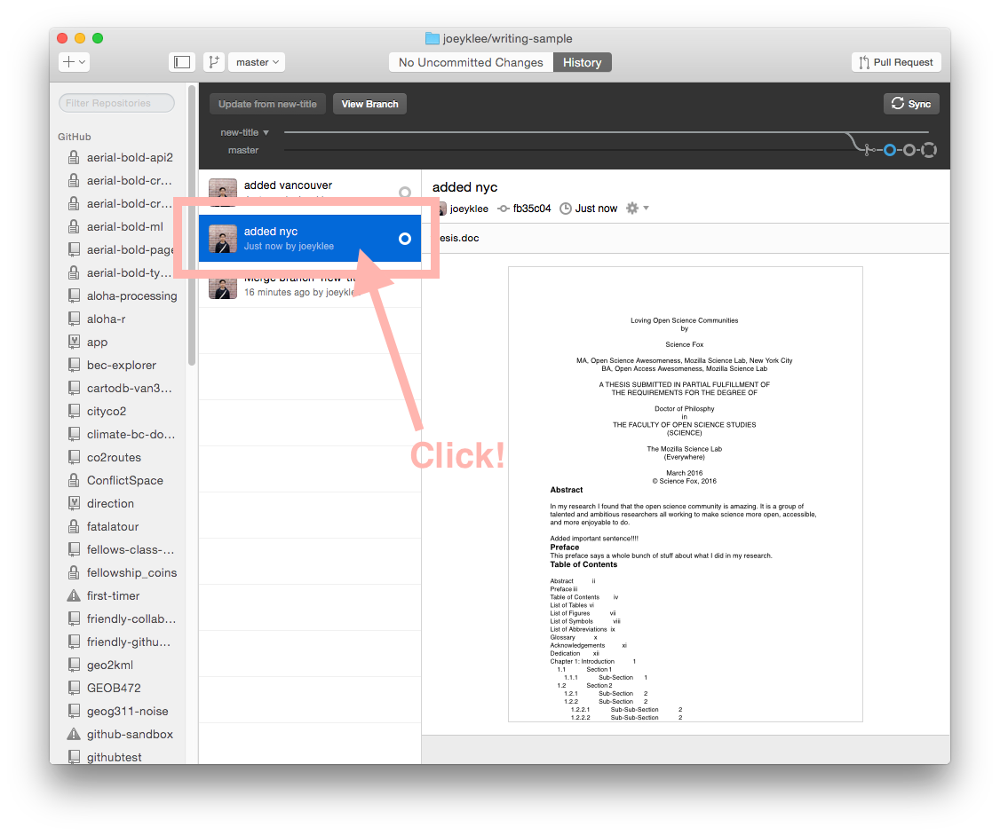Second / third: click the "gear icon" and "revert this commit" ... then sync!
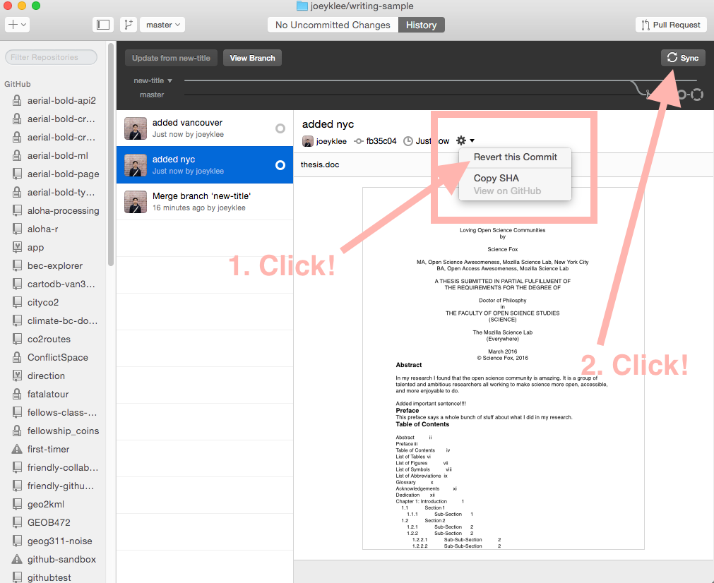 -
Congratulations! You now know the essentials of working with GitHub Online and Github Desktop!! 😎 🎉
Glossary
repository, or repo
a collection of documents related to your project, in which you create and save new code or content.
markdown
a lightweight way of annotating a document with instructions that tell a web browser how to format and display text.
version control
a way of tracking changes to a document or collection of documents. Version control is like a time machine, it can take you back to the moment your document was created, or any other point in time when you or a collaborator saved that document.
Git
the command-line software that tracks all changes to a collection of documents
GitHub
a service that hosts your repository online and helps you work with contributors. GitHub adds a web-based interface to version control.
fork
a copy of a repository that is saved in another user's GitHub account.
branch
a copy of a repo that is contained within the orignal repo. Branches are used to work on a project features without altering the original or "master" repo.
commit
a saved change to a document in a repository.
issue
a message on gitHub that outlines a task that needs to be completed.
pull request
a request to add a commit or collection of commits to a repository.
merge
the act of incorporating new changes (commits) into a repository.